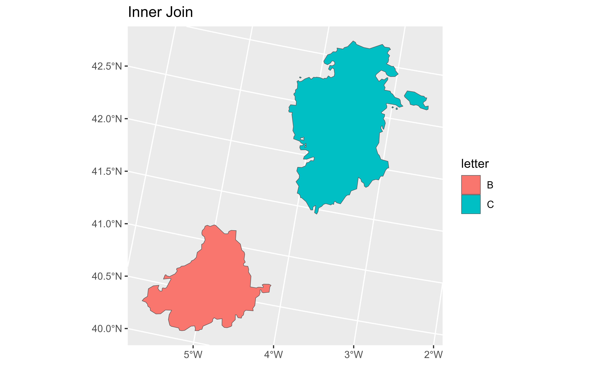
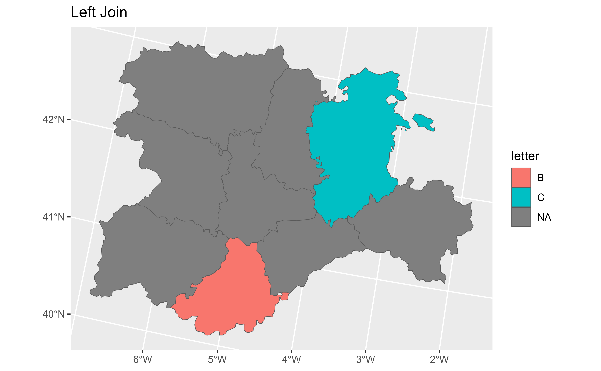
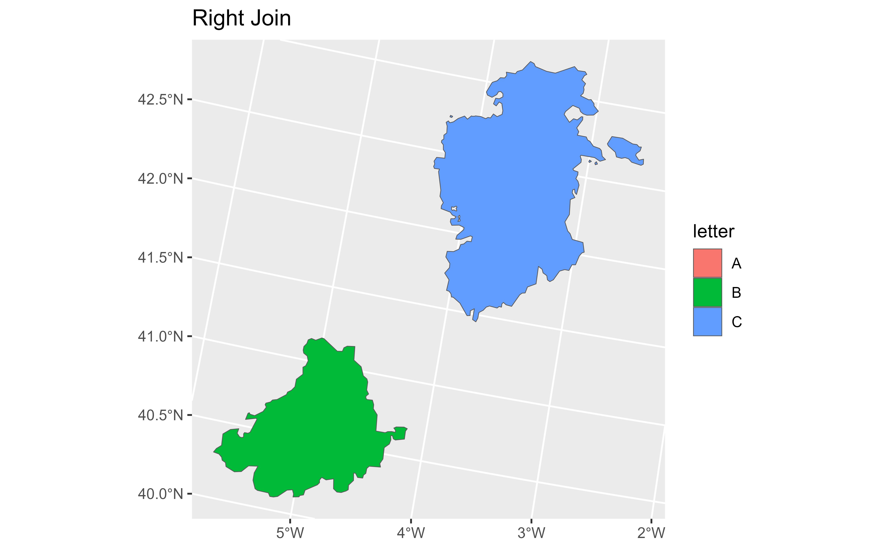
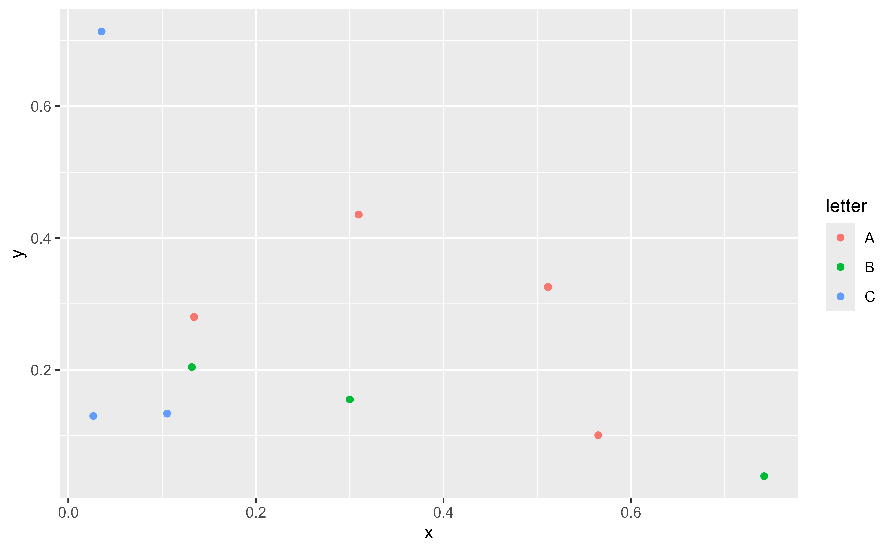
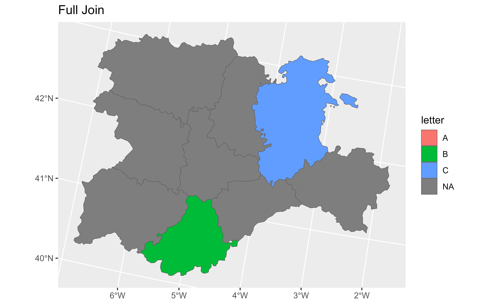
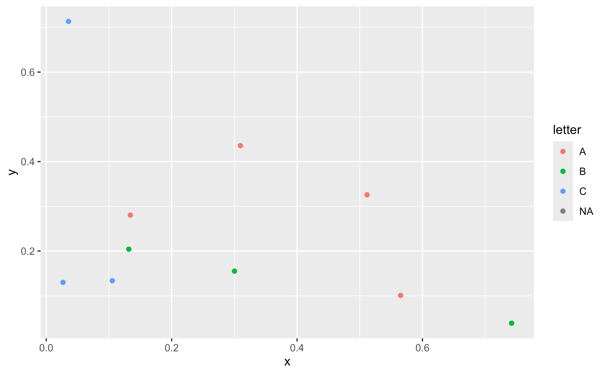

Mutating joins add columns from y to x, matching observations based on
the keys. There are four mutating joins: the inner join, and the three outer
joins.
See dplyr::inner_join() for details.
Usage
# S3 method for class 'SpatVector'
inner_join(
x,
y,
by = NULL,
copy = FALSE,
suffix = c(".x", ".y"),
...,
keep = NULL
)
# S3 method for class 'SpatVector'
left_join(
x,
y,
by = NULL,
copy = FALSE,
suffix = c(".x", ".y"),
...,
keep = NULL
)
# S3 method for class 'SpatVector'
right_join(
x,
y,
by = NULL,
copy = FALSE,
suffix = c(".x", ".y"),
...,
keep = NULL
)
# S3 method for class 'SpatVector'
full_join(
x,
y,
by = NULL,
copy = FALSE,
suffix = c(".x", ".y"),
...,
keep = NULL
)Arguments
- x
A
SpatVectorcreated withterra::vect().- y
A data frame or other object coercible to a data frame. If a
SpatVectorofsfobject is provided it would return an error (seeterra::intersect()for performing spatial joins).- by
A join specification created with
join_by(), or a character vector of variables to join by.If
NULL, the default,*_join()will perform a natural join, using all variables in common acrossxandy. A message lists the variables so that you can check they're correct; suppress the message by supplyingbyexplicitly.To join on different variables between
xandy, use ajoin_by()specification. For example,join_by(a == b)will matchx$atoy$b.To join by multiple variables, use a
join_by()specification with multiple expressions. For example,join_by(a == b, c == d)will matchx$atoy$bandx$ctoy$d. If the column names are the same betweenxandy, you can shorten this by listing only the variable names, likejoin_by(a, c).join_by()can also be used to perform inequality, rolling, and overlap joins. See the documentation at ?join_by for details on these types of joins.For simple equality joins, you can alternatively specify a character vector of variable names to join by. For example,
by = c("a", "b")joinsx$atoy$aandx$btoy$b. If variable names differ betweenxandy, use a named character vector likeby = c("x_a" = "y_a", "x_b" = "y_b").To perform a cross-join, generating all combinations of
xandy, seecross_join().- copy
If
xandyare not from the same data source, andcopyisTRUE, thenywill be copied into the same src asx. This allows you to join tables across srcs, but it is a potentially expensive operation so you must opt into it.- suffix
If there are non-joined duplicate variables in
xandy, these suffixes will be added to the output to disambiguate them. Should be a character vector of length 2.- ...
Other parameters passed onto methods.
- keep
Should the join keys from both
xandybe preserved in the output?If
NULL, the default, joins on equality retain only the keys fromx, while joins on inequality retain the keys from both inputs.If
TRUE, all keys from both inputs are retained.If
FALSE, only keys fromxare retained. For right and full joins, the data in key columns corresponding to rows that only exist inyare merged into the key columns fromx. Can't be used when joining on inequality conditions.
terra equivalent
Methods
Implementation of the generic dplyr::inner_join() family
SpatVector
The geometry column has a sticky behaviour. This means that the result would
have always the geometry of x for the records that matches the join
conditions.
Note that for right_join() and full_join() it is possible to return
empty geometries (since y is expected to be a data frame with no
geometries). Although this kind of joining operations may not be common on
spatial manipulation, it is possible that the function crashes, since
handling of EMPTY geometries differs on terra and sf.
See also
dplyr::inner_join(), dplyr::left_join(), dplyr::right_join(),
dplyr::full_join(), terra::merge()
Other dplyr verbs that operate on pairs Spat*/data.frame:
bind_cols.SpatVector,
bind_rows.SpatVector,
filter-joins.SpatVector
Other dplyr methods:
arrange.SpatVector(),
bind_cols.SpatVector,
bind_rows.SpatVector,
count.SpatVector(),
distinct.SpatVector(),
filter-joins.SpatVector,
filter.Spat,
glimpse.Spat,
group-by.SpatVector,
mutate.Spat,
pull.Spat,
relocate.Spat,
rename.Spat,
rowwise.SpatVector(),
select.Spat,
slice.Spat,
summarise.SpatVector()
Examples
library(terra)
library(ggplot2)
# Vector
v <- terra::vect(system.file("extdata/cyl.gpkg", package = "tidyterra"))
# A data frame
df <- data.frame(
cpro = sprintf("%02d", 1:10),
x = runif(10),
y = runif(10),
letter = rep_len(LETTERS[1:3], length.out = 10)
)
# Inner join
inner <- v |> inner_join(df)
#> Joining with `by = join_by(cpro)`
nrow(inner)
#> [1] 2
autoplot(inner, aes(fill = letter)) + ggtitle("Inner Join")

# Left join
left <- v |> left_join(df)
#> Joining with `by = join_by(cpro)`
nrow(left)
#> [1] 9
autoplot(left, aes(fill = letter)) + ggtitle("Left Join")

# \donttest{
# Right join
right <- v |> right_join(df)
#> Joining with `by = join_by(cpro)`
nrow(right)
#> [1] 10
autoplot(right, aes(fill = letter)) + ggtitle("Right Join")

# There are empty geometries, check with data from df
ggplot(right, aes(x, y)) +
geom_point(aes(color = letter))

# Full join
full <- v |> full_join(df)
#> Joining with `by = join_by(cpro)`
nrow(full)
#> [1] 17
autoplot(full, aes(fill = letter)) + ggtitle("Full Join")

# Check with data from df
ggplot(full, aes(x, y)) +
geom_point(aes(color = letter))
#> Warning: Removed 7 rows containing missing values or values outside the scale range
#> (`geom_point()`).

# }